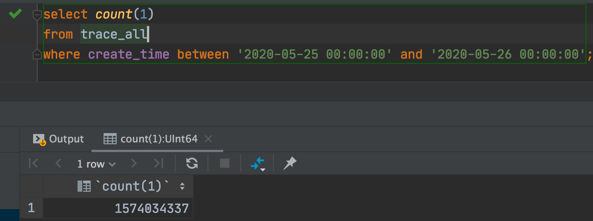
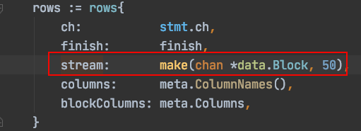

golang处理数据库返回大量数据
问题
这两天需要把ClickHouse的查询结果进行统计然后存储起来，但是每一次查询的出来的数据量非常大。行数很多，某一天的count统计如下：

每次查询的数据有上亿行😢。在ClickHouse查询出结果后返回给client(就是我写的程序)，但是由于这个任务是在k8s内运行，限制只有400m的内存。所以很快就因为内存溢出而崩溃。
之前的代码
一般的情况下都是把查询结果都放到slice内再返回比如这样：
for scanner.Next() {
value := reflect.New(base)
if values, err := mapStructFieldsIntoSlice(value, columns, strict); err != nil {
return err
} else {
if err := scanner.Scan(values...); err != nil {
return err
} else {
appendFn(value)
}
}
}
上面代码循环调用next方法，然后把读取的一行行数据放到slice中，这样很快就内存溢出了。
但是ClickHosue的drive内并不是一下就把所有的数据取回，而是维护一个stream。
当调用rows.next()时Clickhouse实现的Rows对象会从stream中读取一个block：

让我们看看stream的定义：


stream就是一个容量为50的channel，也就是说当我们不执行next时，stream最多有50行的查询结果，这样就避免的了返回大量的查询结果而造成的崩溃。
解决
通过上面的分析，我们也可以使用chan来解决
func BatchScanRows(db *sql.DB, ch chan interface{}, dest interface{}, query string, args ...interface{}) error {
.....
省略部分代码
.......
go func() {
defer close(ch)
for rows.Next() {
v := reflect.New(itemType)
err := rows.Scan(span(v.Interface(), columnIdx)...)
if err != nil {
logx.Error(err)
break
}
ch <- v.Interface()
}
}()
return nil
}
使用chan来接收rows.next的返回，这个chan我设置的大小是50000。然后再启动一个goroutine异步执行，保证立即返回。
func queryCH(heraCH *sql.DB, startStr string, endStr string) (map[int]statInfo, error) {
chSQL := `select * from xxx`
weeklyInfos := []*weeklyInfo{}
ch := make(chan interface{}, 50000)
err := ckgroup.BatchScanRows(heraCH, ch, &weeklyInfos, chSQL, startStr, endStr)
if err != nil {
if err == sqlx.ErrNotFound {
return nil, nil
}
return nil, err
}
statMap := map[int]statInfo{}
//循环读取chan，直到chan close
for data := range ch {
v := data.(*weeklyInfo)
weeklyId, err := getWeeklyId(v.Path)
if err != nil {
logx.Error(err)
continue
}
statInfoItem := statMap[weeklyId]
statInfoItem.ViewCount++
statInfoItem.ViewTotal += int64(v.StayTime)
statMap[weeklyId] = statInfoItem
}
return statMap, nil
}
这样就能边处理边从Clickhouse的服务器中取数据
- 原文作者：Noel
- 原文链接：https://blog.18881888.xyz/post/2020.5.26_golang%E5%A4%84%E7%90%86%E6%95%B0%E6%8D%AE%E5%BA%93%E8%BF%94%E5%9B%9E%E5%A4%A7%E9%87%8F%E6%95%B0%E6%8D%AE/
- 版权声明：本作品采用知识共享署名-非商业性使用-禁止演绎 4.0 国际许可协议进行许可，非商业转载请注明出处（作者，原文链接），商业转载请联系作者获得授权。